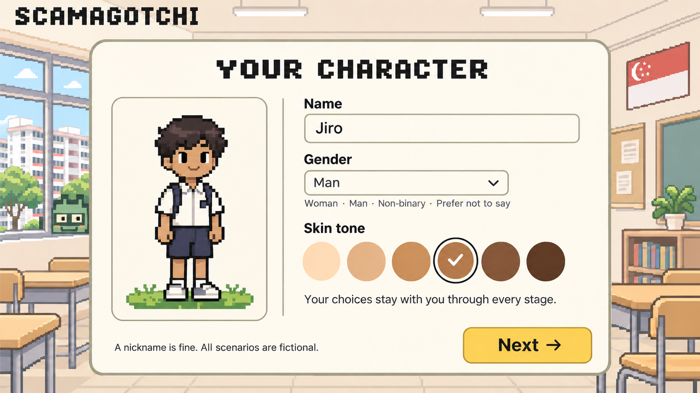
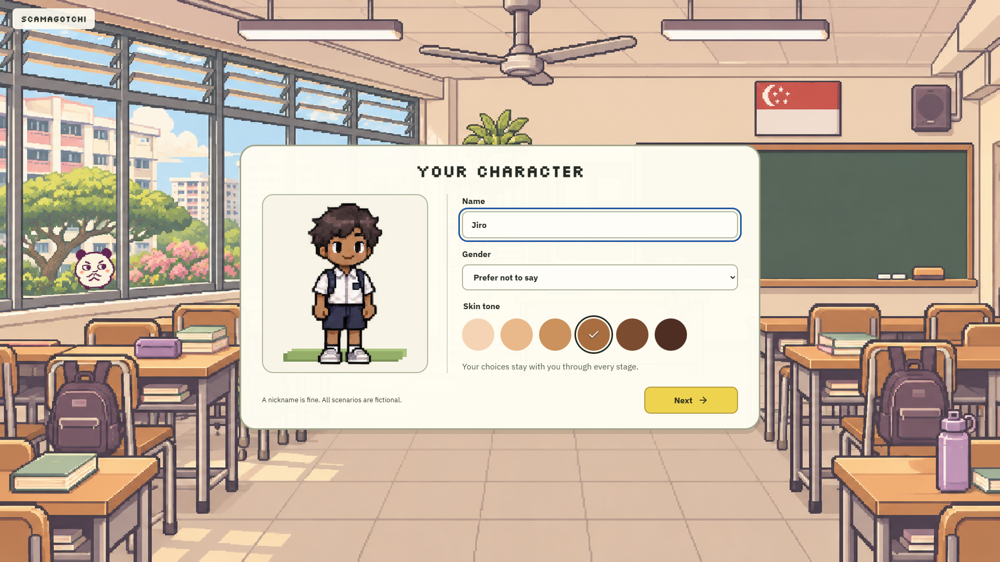
Review date: 6 November 2026. Reference images are ImageGen concepts; implementation images are isolated Microsoft Edge captures at 1920 × 1080. These images come from isolated browser checks. The user's Chrome window was also inspected at split-window and maximized laptop sizes; later desktop interaction stopped on a Computer Use URL-confidence check.
The implementation follows the layouts and visual direction, but is not a pixel-for-pixel match. The main remaining differences are native browser font sizes, adapted room compositions and cropping, and phone controls limited to implemented game actions. Detailed generated character sprites now replace the earlier block avatars. The wallpaper change follows the user's selected image. The later pacing update uses one S$2 / S$10 / S$50 / S$100 note per tap by stage (two after upgrading), superseding the larger note stacks in the approval mocks.
Cream two-column form, classroom window antagonist, gender and six skin tones implemented. The avatar now uses detailed chibi pixel art with six skin tones, two hairstyles and four life stages. Native default font sizes make the heading and fields less oversized.


Each life stage has its own banner, identity, current plans and contacts. Ages now follow the latest requested values: 15, 22, 35 and 65. One profile is shown at a time. Portrait framing and full-width Next follow the approved cards; the generated room furnishings and the responsive arrangement differ.
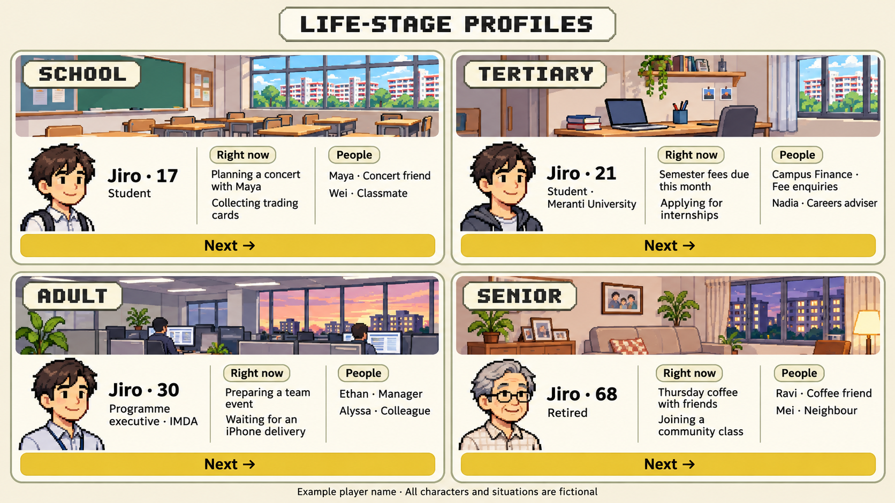
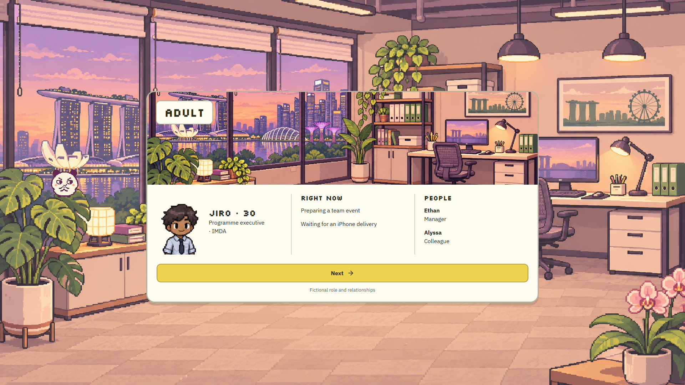
Three columns fill the viewport; background and header dim, phone and left decision card remain active. Generated room artwork is adapted to the viewport, so cropping and furniture differ. Banknotes now use a coordinated generated pixel-art atlas, with one note per tap and two after an upgrade. This later user-requested redesign supersedes the simple specimen artwork shown in the original mockup.
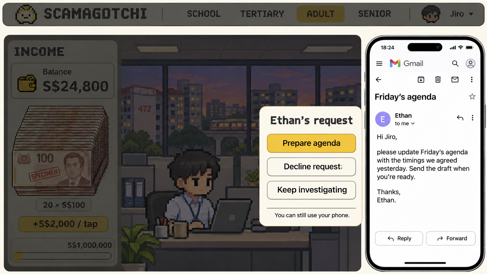
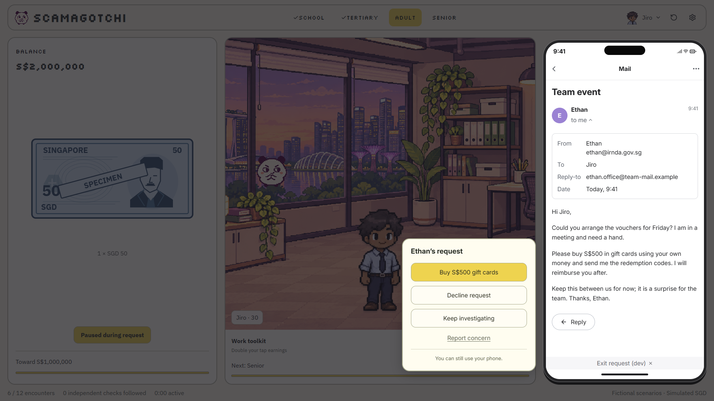
Telegram-style bubbles and attachment viewer; Gmail sender-details disclosure and ordinary message flow. Telegram background uses a subtle dot texture rather than doodles. Only implemented controls are displayed, so Gmail archive, delete and forwarding chrome is omitted.
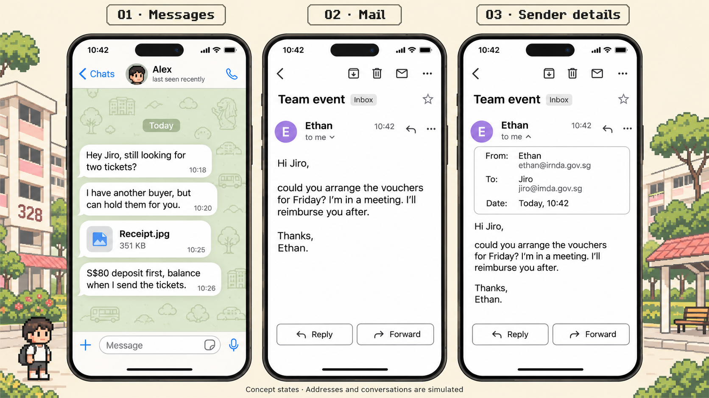
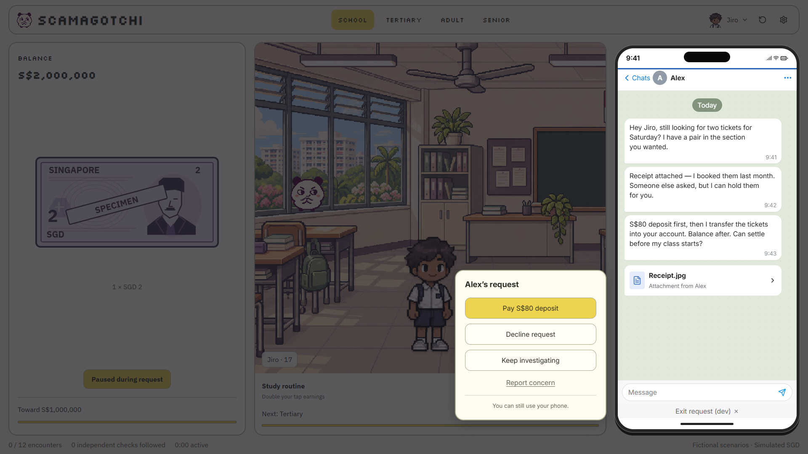
Sender details, including reply-to when present in the scenario, expand naturally. Details are evidence to inspect, not a trust badge. Default native text metrics differ from the generated mock.
iOS-style incoming accept/decline, saved contacts and independent outbound calls. Calls now include locally bundled Kopi Gao voice messages, optional native playback controls and matching transcripts. Mute, keypad and live conversation remain outside this prototype. The original screenshots below predate the new audio player.
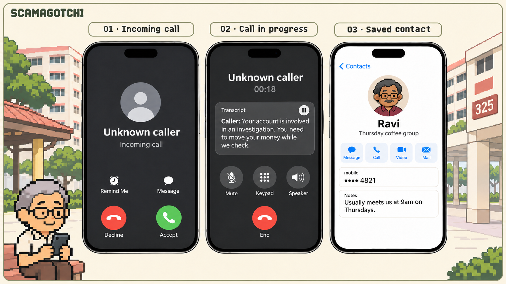
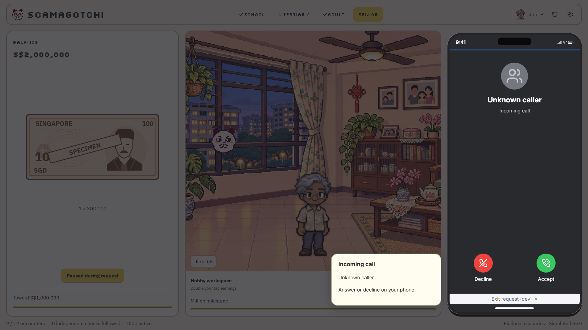
Saved-contact route persists verification evidence. Transcript panel is a game-specific adaptation, not a native iOS screen. Independent saved-contact checks remain text-based; incoming call recordings have optional audio.
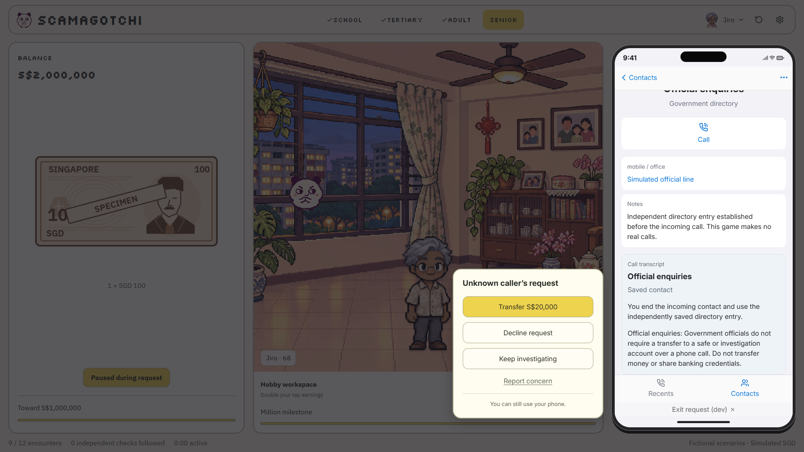
Requests remain in Notification Centre with original-channel links. User-selected black iPhone wallpaper with 40% dark overlay supersedes the generated reference. Today replaces the mock's hardcoded date.
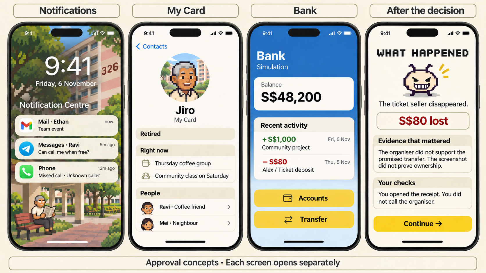
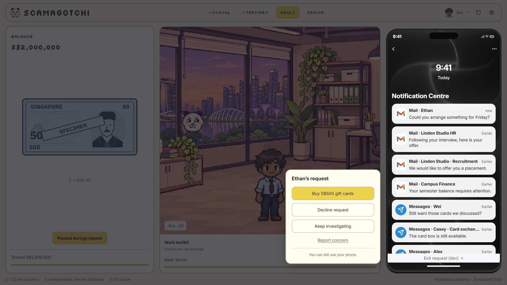
Player identity, role, current plans and contacts are accessible during an event. Artwork uses the same configurable avatar as the rest of the game.
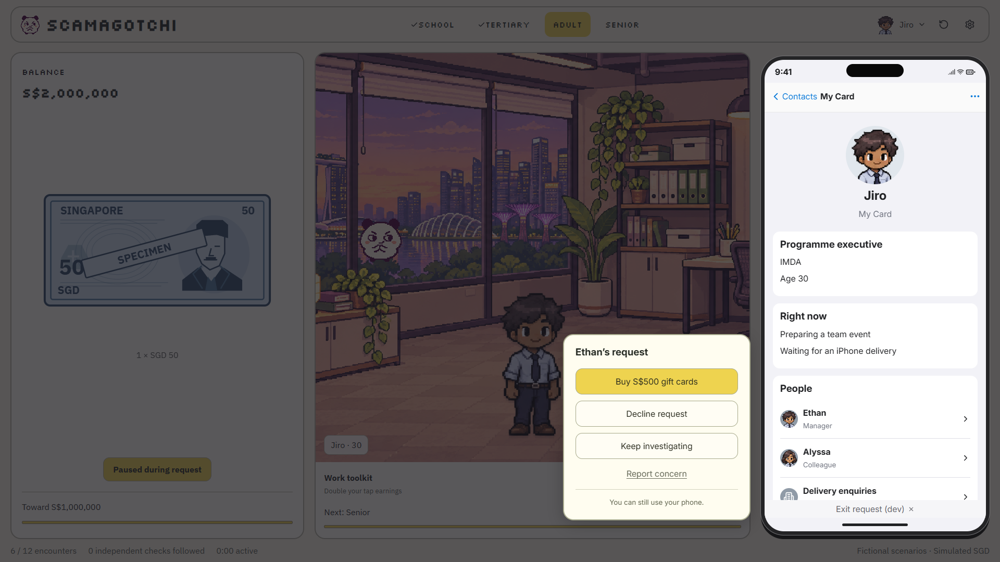
Blue bank surface and white ledger cards follow the mock. Transactions and balances are simulated and persist across stages.
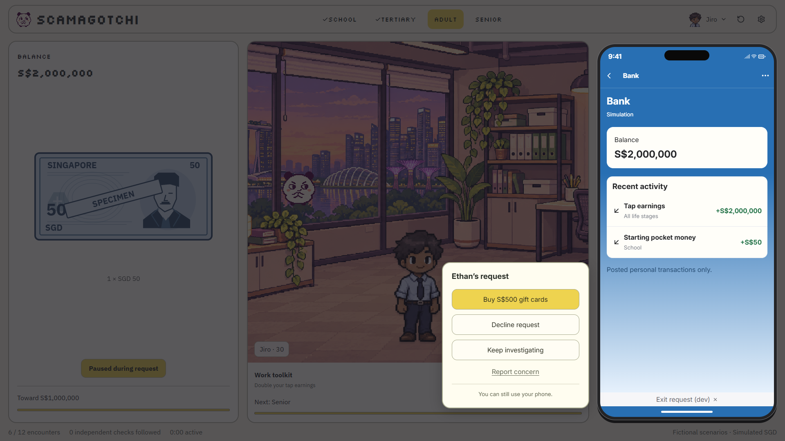
Evidence, decision and consequences are explained after acting. Content scrolls inside the phone; copy adapts to the actual decision rather than matching the static example verbatim.
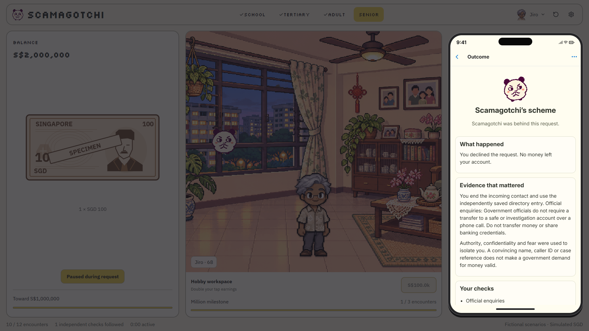
Both sprite sheets were checked as full-body figures and portraits: six skin tones across all four life stages. Non-binary and unspecified gender selections currently use the short-haired sheet.
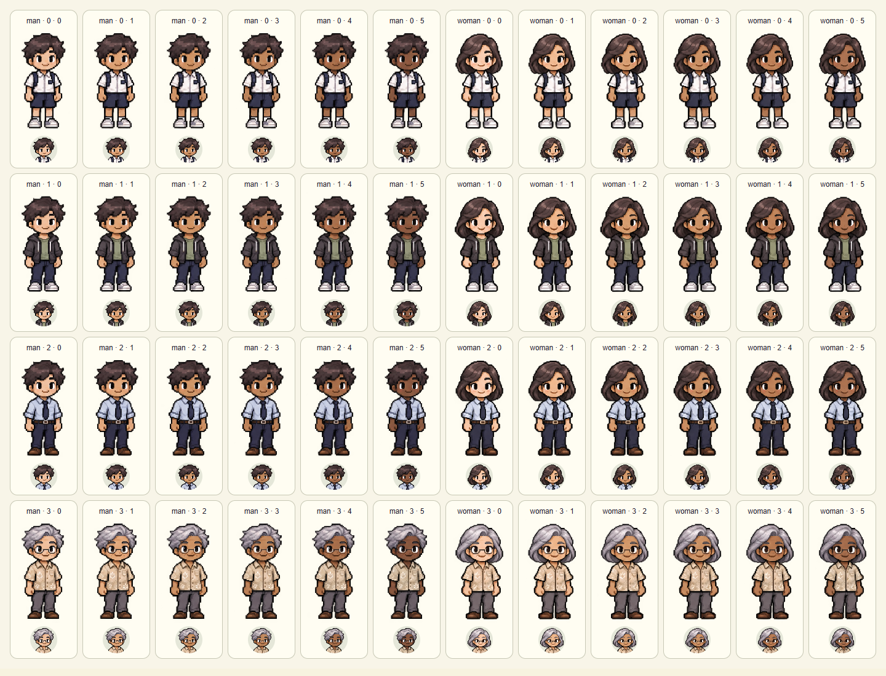
Following the latest revision, the four notes use the SGD Portrait Series front layout: portrait on the right, pale left panel, engraved denomination typography and ornamental pixel linework. Purple S$2, red S$10, blue S$50 and orange S$100 are clearly marked SPECIMEN and GAME NOTE. The game clips the original atlas into individual note sprites. Official MAS S$2/S$10/S$50 image references were inspected; the S$100 image endpoint was unavailable, so its common layout and orange colour follow the official descriptions.